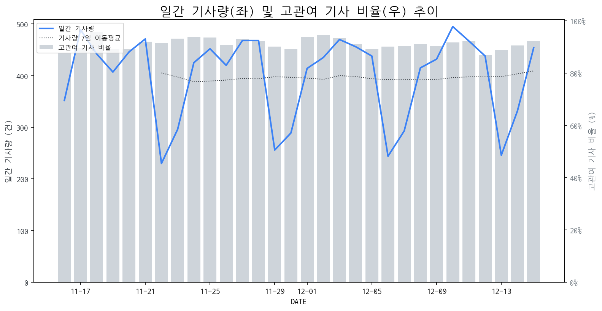

1
시장 활동 지표
기사량 추세 & 이상 징후 탐지
시장의 '전체 기사량'이 평소보다 비정상적으로 급증했는지(Spike)를 차트로 확인하고, LLM이 분석한 급등의 핵심 원인을 파악할 수 있음

고관여 기사란? 산업 연관 키워드로 수집된 기사들 중 디스플레이 키워드에 가중치를 반영하여 도출된 관련성 높은 기사
수집된 기사 수 (2025-12-15)
454
+9% WoW
기사량 변동 수준 (7일 이동평균 대비)
±6.7% 이하
2
오늘의 키워드
급격한 관심 ↑, 주목해야 할 키워드
1
boe
+7.0σ
BOE 회장 삼성전자 방문, LCD 공급 확대 논의가 급증 주요 원인입니다.
Related Metrics
금일 언급량: 27, 전일 대비: +27
Interpretation
LCD 공급망 협력 가능성
Next Step
'boe' 관련 상세 기사 및 경쟁사 반응 모니터링
2
삼성전자
+4.9σ
BOE 회장의 삼성전자 방문 및 LCD 공급 논의 소식이 주가 급등의 핵심 요인입니다.
Related Metrics
금일 언급량: 32, 전일 대비: +29
Interpretation
LCD 공급 협력 강화
Next Step
핵심 토픽 'Foldable_Display_Topic' 관련 신호입니다. 3번 섹션(키워드 감성분석)에서 해당 토픽의 감성 변동을 교차 확인하세요.
3
모바일
+4.5σ
배틀그라운드 모바일과 스쿠데리아 페라리의 파트너십 발표로 '모바일' 키워드 급증.
Related Metrics
금일 언급량: 15, 전일 대비: +15
Interpretation
모바일 게임 수요 증가.
Next Step
'모바일' 관련 상세 기사 및 경쟁사 반응 모니터링
4
lcd
+3.6σ
BOE 회장의 삼성전자 방문 및 LCD 공급 논의 소식이 LCD 업계 전반의 주목도를 높였습니다.
Related Metrics
금일 언급량: 12, 전일 대비: +10
Interpretation
BOE-삼성 간 협력 강화 가능성
Next Step
'lcd' 관련 상세 기사 및 경쟁사 반응 모니터링
3
실시간 Risk 키워드
경계해야 할 시그널 탐지
특정 토픽의 부정 감성 점수가 급등할 때 이를 즉시 탐지하고, "근거 기사" 링크를 통해 리스크의 실체를 빠르게 파악할 수 있음
키워드 분석 결과, 오늘은 걱정할 만한 하락 신호가 없습니다. (부정 언급량 변화: +1.5σ 이내)
4
주요 이벤트 모니터링
실시간 산업 동향 파악을 위한 주요 활동
최근 발생한 주요 기업들의 신제품 출시, 투자 등 주요 이벤트를 제공하여 매일 경쟁사 동향을 확인할 수 있음
삼성디스플레이는 내년에도 애플과의 협력을 통해 태블릿 및 폴더블 OLED 시장에서의 성장을 기대하고 있습니다. 이는 애플의 신제품 출시에 따른 OLED 수요 증가를 예측하는 것입니다.
Impact
이 이벤트는 삼성디스플레이뿐만 아니라 관련 OLED 소재 및 부품 공급업체들에게도 긍정적인 영향을 미칠 것이며, OLED 시장 전반의 경쟁 및 기술 발전을 촉진할 수 있습니다.
Next Step
삼성디스플레이는 애플의 차세대 디바이스에 최적화된 고성능, 고효율 OLED 기술 개발 및 안정적인 공급망 구축에 집중해야 합니다.
쎄크, 자비스, 대진첨단소재, 피노텍 등 2차전지 관련주들이 급등하며 시장의 주목을 받고 있습니다. 이는 2차전지 산업의 성장과 더불어 연관 기술 및 소재 기업들의 가치가 부각되고 있음을 보여줍니다.
Impact
2차전지 산업의 호황은 디스플레이 기술이 2차전지 제조 공정이나 관련 부품 생산에 적용될 수 있는 새로운 시장 기회를 창출할 잠재력이 있습니다.
Next Step
디스플레이 제조 기업은 2차전지 산업의 핵심 공정 및 소재 기술과 디스플레이 기술 간의 융합 가능성을 탐색하고, 관련 R&D 투자를 강화하여 신규 시장 진출을 모색해야 합니다.
국세청은 60회 납세자의 날을 맞아 피겨여왕 김연아 씨를 포함한 모범납세자 포상 후보를 선정했습니다. 이는 성실 납세 문화 확산에 기여하는 긍정적인 사회적 움직임입니다.
Impact
본 이벤트 자체는 디스플레이 시장의 직접적인 수요나 기술 발전에 영향을 미치지 않지만, 사회 전반의 긍정적 분위기 조성 및 기업의 사회적 책임(CSR) 강조 트렌드에 따라, 디스플레이 제조 기업의 이미지 제고 및 ESG 경영 강화에 대한 간접적인 영향을 기대할 수 있습니다.
Next Step
디스플레이 제조 기업은 본 이벤트와 같은 사회적 이슈를 긍정적으로 활용하여, 성실 납세와 더불어 투명 경영 및 사회 공헌 활동을 강조하는 기업 홍보 전략을 수립할 필요가 있습니다.
삼성과 LG가 CES 2026에서 다수의 혁신상을 수상하며 차세대 디스플레이 기술력을 입증했다. 이는 두 기업이 미래 디스플레이 시장의 주도권을 확보하기 위한 경쟁을 본격화하고 있음을 시사한다.
Impact
삼성과 LG의 기술 리더십 부각은 향후 디스플레이 시장의 기술 트렌드를 선도하고 프리미엄 시장에서의 점유율 확대에 긍정적인 영향을 미칠 것으로 예상된다.
Next Step
경쟁사의 혁신 기술 동향을 면밀히 분석하고, 차별화된 기술 개발 및 마케팅 전략 수립을 통해 시장 경쟁력을 확보해야 한다.
이재용 회장은 글로벌 회의에서 'AI 드리븐 컴퍼니'로의 전환이라는 새로운 비전을 제시하며, AI가 사업 전반에 깊숙이 통합될 것임을 강조했습니다. 이는 디스플레이 사업에도 AI 기술 적용 및 혁신 가속화의 중요성을 시사합니다.
Impact
이번 AI 중심의 기업 전환은 디스플레이 기술 개발 및 제조 공정에 AI를 적극 활용하게 함으로써, 차세대 디스플레이 기술의 혁신과 생산 효율성 증대를 촉진할 것으로 예상됩니다.
Next Step
AI 기반의 스마트 팩토리 구축, AI를 활용한 신소재 및 공정 개발 역량 강화, 그리고 AI 솔루션과의 시너지를 창출할 수 있는 디스플레이 제품 로드맵 수립에 집중해야 합니다.
5
지금 주목해야 할 뉴스 TOP 3
천옌순 中 BOE 회장 삼성전자 방문…관계복원 신호탄?
중국 디스플레이 업체 BOE의 천옌순 회장이 방한해 삼성전자 경영진과 회동하여 최근 삼성 TV에 공급되는 BOE LCD(액정표시장치) 물량 확대 등을 논의한 것으로 전해진다.
'혁신상 싹쓸이' 삼성·LG, 'CES 2026' 주도권 나선다
로컬 요약 모델 실행 중 오류 발생: 제목을 클릭하여 기사 전문을 확인할 수 있습니다.
中 BOE 천옌순 회장, 삼성전자 경영진 회동…LCD 공급 논의할 듯
뉴스1관련 키워드삼성전자박주평 기자 마이크론, 이번주 분기 실적...삼성·SK하닉 '영업익 200조' 가늠자LG전자, 크리스마스 맞아 '앰버서더 데이'...수익금 기부관련 기사美 횡단하며 테슬라-AMD 미팅 강행군...이재용 "열심히 하고 왔다"거래소 "밸류업 지수 최고치 경신...공시 이행 기업으로 지수 구성할 것" c c c c 뉴스1관련 키워드삼성전자박주평 기자 마이크론, 마이크론, 이번주 분기 실적...삼성·SK하닉 '영업익 200조' 가늠자LG전자, 크리스마스 맞아 '앰버서더 데이',수익금 기부관련 기사美 횡단하며 테슬라-AMD 미팅 강행군...이재용 "열심히 하고 왔다"거래소 "밸류업 지수 최고치 경신...공시 이행 기업으로 지수 구성할 것"잊을만하면 터지는 'AI거품론'...반도체주, 또 '털썩' [핫종목]삼성케어 미적용 갤Z트라이폴드...'165만원' 수리비 어쩌나기아·삼성, 광주 기후위기 취약계